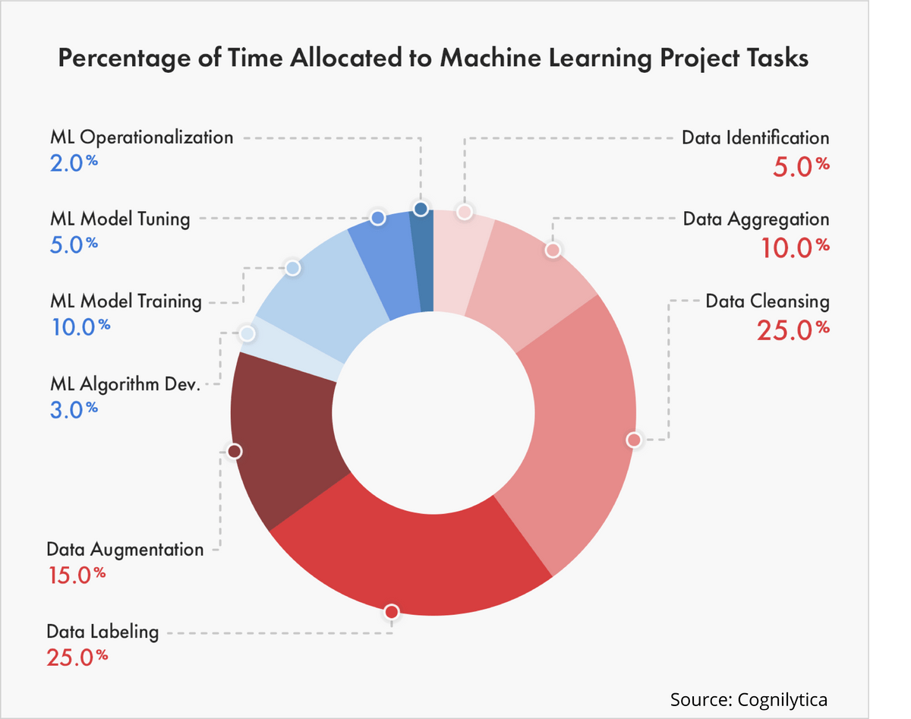

Best Practices
Before starting a machine learning project
Ask yourself
What is your scientific problem?
Can this scientific problem be transformed to machine learning problem?
Keep the problem simple; if not, decompose it
Do you really have to use machine learning?
Continue asking…
What is the goal of your ML project?
Do you have enough high-quality data?
How do you measure the model performance?
First design and implement metrics
Do you have good enough infrastructure?
Are there any risks related to privacy and ethics?
Deon ethics checklist
During doing machine learning
Workflow or pipeline
Having a bad workflow is better than nothing
Make one and then optimize it

Data
Be very patient with data engineering
Split data to training, validation and test sets
NEVER mix using data:
training data only for training
validation data only for validation (picking model)
test data only for test (estimating generalization performance)
Use common-sense features
Borrow features from state-of-the-art models
Model
Set a baseline performance/model
use state-of-the-art model
human performance
guess it with your experience
Keep your first model simple
Be patient with training
It is an iterative cycle to improve your model
After training
Versioning
Version your data, code and everything
using
git and github
MLFlow
Weights & Biases
Re-train
Retrain the model when possible
e.g. new data, new features
Thank you
Q&A